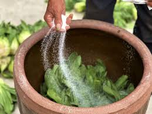

“These jars have stood here for generations. Each one has stored pickled memories.”
@Anonymous

“Every winter, my father still prepares snow cabbage in this jar — just like his father did.”
@Young Yu

“The moment salt touches the leaves, you know it’s the start of a new season.”
@Min's Kitchen
늙은 한국 도예가인 이 선생님은 매년 전통 온기 항아리를 손수 만들어 김치와 장을 발효시킨다. 어느 날, 도시에서 온 젊은 소년 지호가 마을에 와서 이 선생님에게 온기 항아리 만드는 기술을 배우고 그 뒤에 숨겨진 이야기를 듣는다. 그 경험을 통해 지호는 조상들의 문화와의 연결을 다시 찾았고, 그 전통을 이어가겠다고 다짐한다.
@Ji-minIn un paesino della Sicilia，ogni anno durante la raccolta delle olive, la piazza del villaggio si riempie di antiche anfore che espongono l'olio appena spremuto. I bambini scorrazzano giocosi tra i grandi vasi, mentre gli adulti assaggiano l'olio, contrattano il prezzo e ogni tanto danno un colpetto alle anfore, come se stesse verificando la solidità e gli anni che portano addosso.
@Alessandro